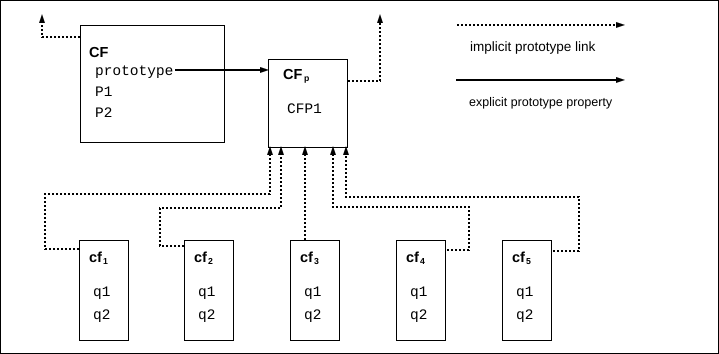

?uem/p1-90`This section contains a non-normative overview of the ECMAScript language.
ECMAScript is an object-oriented programming language for performing computations and manipulating computational objects within a
ECMAScript was originally designed to be used as a scripting language, but has become widely used as a general-purpose programming language. A scripting language is a programming language that is used to manipulate, customize, and automate the facilities of an existing system. In such systems, useful functionality is already available through a user interface, and the scripting language is a mechanism for exposing that functionality to program control. In this way, the existing system is said to provide a
ECMAScript was originally designed to be a Web scripting language, providing a mechanism to enliven Web pages in browsers and to perform server computation as part of a Web-based client-server architecture. ECMAScript is now used to provide core scripting capabilities for a variety of
ECMAScript usage has moved beyond simple scripting and it is now used for the full spectrum of programming tasks in many different environments and scales. As the usage of ECMAScript has expanded, so have the features and facilities it provides. ECMAScript is now a fully featured general-purpose programming language.
A web browser provides an ECMAScript
A web server provides a different
Each Web browser and server that supports ECMAScript supplies its own
To aid integrating ECMAScript into
An implementation is an external source that further defines facilities enumerated in Annex
An implementation-defined facility is one that defers its definition to an external source without further qualification. This specification does not make any recommendations for particular behaviours, and conforming implementations are free to choose any behaviour within the constraints put forth by this specification.
An implementation-approximated facility is one that defers its definition to an external source while recommending an ideal behaviour. While conforming implementations are free to choose any behaviour within the constraints put forth by this specification, they are encouraged to strive to approximate the ideal. Some mathematical operations, such as Math.exp
A host is an external source that further defines facilities listed in Annex
A host hook is an abstract operation that is defined in whole or in part by an external source. All
A host-defined facility is one that defers its definition to an external source without further qualification and is listed in Annex
A host environment is a particular choice of definition for all
This specification follows the editorial convention of always using the most specific term. For example, if a facility is
Both
The following is an informal overview of ECMAScript—not all parts of the language are described. This overview is not part of the standard proper.
ECMAScript is object-based: basic language and
ECMAScript defines a collection of built-in objects that round out the definition of ECMAScript entities. These built-in objects include the Object, Function, Boolean, Symbol, and various Error objects; objects that represent and manipulate numeric values including Math, Number, and Date; the text processing objects String and RegExp; objects that are indexed collections of values including Array and nine different kinds of Typed Arrays whose elements all have a specific numeric data representation; keyed collections including Map and Set objects; objects supporting structured data including the JSON object, ArrayBuffer, SharedArrayBuffer, and DataView; objects supporting control abstractions including generator functions and Promise objects; and reflection objects including Proxy and Reflect.
ECMAScript also defines a set of built-in operators. ECMAScript operators include various unary operations, multiplicative operators, additive operators, bitwise shift operators, relational operators, equality operators, binary bitwise operators, binary logical operators, assignment operators, and the comma operator.
Large ECMAScript programs are supported by modules which allow a program to be divided into multiple sequences of statements and declarations. Each module explicitly identifies declarations it uses that need to be provided by other modules and which of its declarations are available for use by other modules.
ECMAScript syntax intentionally resembles Java syntax. ECMAScript syntax is relaxed to enable it to serve as an easy-to-use scripting language. For example, a variable is not required to have its type declared nor are types associated with properties, and defined functions are not required to have their declarations appear textually before calls to them.
Even though ECMAScript includes syntax for class definitions, ECMAScript objects are not fundamentally class-based such as those in C++, Smalltalk, or Java. Instead objects may be created in various ways including via a literal notation or via new Date(2009, 11) creates a new Date object. Invoking a Date() produces a string representation of the current date and time rather than an object.
Every object created by a

In a class-based object-oriented language, in general, state is carried by instances, methods are carried by classes, and inheritance is only of structure and behaviour. In ECMAScript, the state and methods are carried by objects, while structure, behaviour, and state are all inherited.
All objects that do not directly contain a particular property that their prototype contains share that property and its value. Figure 1 illustrates this:
CF is a new expressions: cf1, cf2, cf3, cf4, and cf5. Each of these objects contains properties named
Unlike most class-based object languages, properties can be added to objects dynamically by assigning values to them. That is,
Although ECMAScript objects are not inherently class-based, it is often convenient to define class-like abstractions based upon a common pattern of
The ECMAScript Language recognizes the possibility that some users of the language may wish to restrict their usage of some features available in the language. They might do so in the interests of security, to avoid what they consider to be error-prone features, to get enhanced error checking, or for other reasons of their choosing. In support of this possibility, ECMAScript defines a strict variant of the language. The strict variant of the language excludes some specific syntactic and semantic features of the regular ECMAScript language and modifies the detailed semantics of some features. The strict variant also specifies additional error conditions that must be reported by throwing error exceptions in situations that are not specified as errors by the non-strict form of the language.
The strict variant of ECMAScript is commonly referred to as the strict mode of the language. Strict mode selection and use of the strict mode syntax and semantics of ECMAScript is explicitly made at the level of individual
In order to conform to this specification, an ECMAScript implementation must implement both the full unrestricted ECMAScript language and the strict variant of the ECMAScript language as defined by this specification. In addition, an implementation must support the combination of unrestricted and strict mode source text units into a single composite program.
For the purposes of this document, the following terms and definitions apply.
an
an
same as
Editorially, see clause
set of data values as defined in clause
member of one of the types Undefined, Null, Boolean, Number, BigInt, Symbol, or String as defined in clause
A primitive value is a datum that is represented directly at the lowest level of the language implementation.
member of the type Object
An object is a collection of properties and has a single prototype object. The prototype may be
The value of a
object that provides shared properties for other objects
When a constructor.prototype, and properties added to an object's prototype are shared, through inheritance, by all objects sharing the prototype. Alternatively, a new object may be created with an explicitly specified prototype by using the Object.create built-in function.
object that has the default behaviour for the essential internal methods that must be supported by all objects
object that does not have the default behaviour for one or more of the essential internal methods
Any object that is not an
object whose semantics are defined by this specification
object specified and supplied by an ECMAScript implementation
Standard built-in objects are defined in this specification. An ECMAScript implementation may specify and supply additional kinds of built-in objects.
primitive value used when a variable has not been assigned a value
type whose sole value is the
primitive value that represents the intentional absence of any object value
type whose sole value is the
member of the
There are only two Boolean values,
type consisting of the primitive values
member of the
A Boolean object is created by using the Boolean new expression, supplying a Boolean value as an argument. The resulting object has an internal slot whose value is the Boolean value. A Boolean object can be coerced to a Boolean value.
primitive value that is a
A String value is a member of the
set of all possible String values
member of the
A String object is created by using the String new expression, supplying a String value as an argument. The resulting object has an internal slot whose value is the String value. A String object can be coerced to a String value by calling the String
primitive value corresponding to a double-precision 64-bit binary format
A Number value is a member of the
set of all possible Number values including
member of the
A Number object is created by using the Number new expression, supplying a Number value as an argument. The resulting object has an internal slot whose value is the Number value. A Number object can be coerced to a Number value by calling the Number
Number value that is the positive infinite Number value
Number value that is an
primitive value corresponding to an arbitrary-precision
set of all possible BigInt values
member of the
primitive value that represents a unique, non-String Object
set of all possible Symbol values
member of the
member of the
In addition to its properties, a function contains executable code and state that determine how it behaves when invoked. A function's code may or may not be written in ECMAScript.
built-in object that is a function
Examples of built-in functions include parseInt and Math.exp. A
built-in function that is a
Examples of built-in Object and Function. A
part of an object that associates a key (either a String value or a Symbol value) and a value
Depending upon the form of the property the value may be represented either directly as a data value (a primitive value, an object, or a
function that is the value of a property
When a function is called as a method of an object, the object is passed to the function as its
method that is a built-in function
Standard built-in methods are defined in this specification. A
internal value that defines some characteristic of a property
property that is directly contained by its object
property of an object that is not an own property but is a property (either own or inherited) of the object's prototype
The remainder of this specification is organized as follows:
Clause
Clauses
Clauses
Clauses
Clause